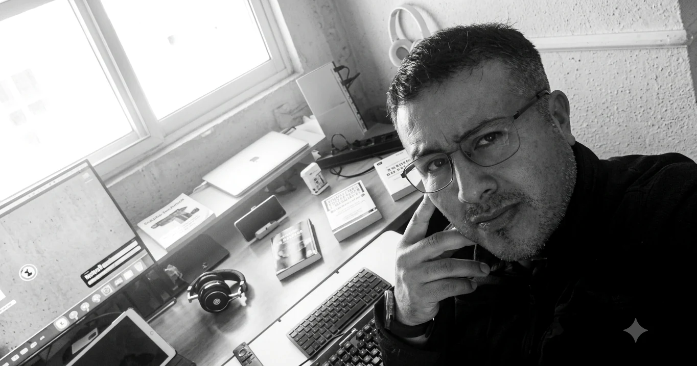

STANNET / SOBRE MÍ
La curiosidad me ha traído hasta aquí.
Mi formación no ha seguido una línea recta. Ha seguido mi curiosidad.
Conoce mi historia ↓
Aprender, cambiar, seguir adelante.
Mi historia comienza en Ecuador, donde cursé el Bachillerato en Química y Biología en el Colegio Experimental Bernardo Valdivieso. Después estudié durante dos años Odontología en la Universidad Estatal de Cuenca.
Con el tiempo, mi camino me llevó fuera de Ecuador. Vivir y estudiar entre distintos países —España, Suecia y Reino Unido— amplió mi forma de ver el mundo y mi manera de aprender.
En Londres estudié inglés en International House, utilizando también el método Callan. Más adelante, durante mi etapa en Estocolmo, estudié sueco hasta SFI C3 con Hermods.
La tecnología terminó convirtiéndose en el punto donde muchas de mis inquietudes comenzaron a encontrarse.
De aprender tecnología a construir con ella.
Decidí estudiar Desarrollo de Aplicaciones Web (DAW). Mi formación ha pasado por INS Brianda de Mendoza, ILERNA y continúa actualmente en Jobi FP.
A la formación reglada se suma el aprendizaje autónomo: cursos en Platzi y Udemy, formación en ciberseguridad con C1b3rWall Academy de la Policía Nacional y formación especializada en Splunk.
Programación, redes, inteligencia artificial y ciberseguridad empezaron a dejar de ser solo materias que estudiar. Empezaron a convertirse en cosas que quería construir.
Ver formación y certificados ↗03 / EL ORIGEN DE STANNET
¿Y si intento hacerlo?
Esa pregunta resume cómo nació StanNet. En lugar de limitarme a aprender cómo funcionan las tecnologías, empecé a utilizarlas para crear mis propios proyectos.
Un espacio para experimentar.
Así nació StanNet.space: mi espacio personal para experimentar, aprender y construir. Un laboratorio donde reúno programación, inteligencia artificial, ciberseguridad, herramientas de software, academias interactivas, música y nuevos proyectos.
Algunas ideas funcionan a la primera. Otras hay que romperlas, reconstruirlas y volver a intentarlo. Precisamente ahí está el aprendizaje.
Explorar proyectos ↗Seguir aprendiendo. Seguir creando.
Mi siguiente objetivo es profundizar en ciberseguridad, continuar desarrollando mis conocimientos de redes, Linux, análisis y seguridad informática y, posteriormente, avanzar hacia Ingeniería Informática.
StanNet crecerá conmigo. Representa mi voluntad de seguir aprendiendo, experimentar y convertir ideas en proyectos reales.
CONTACTO